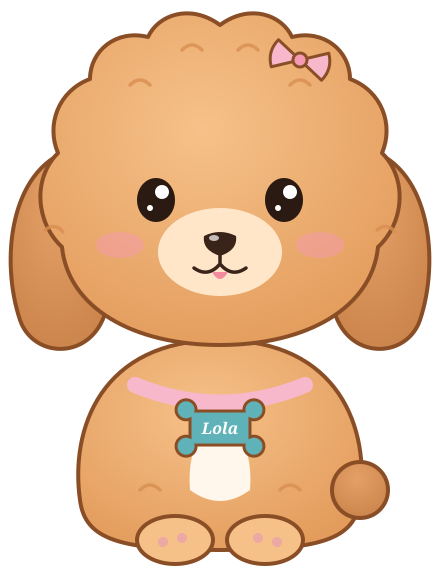

Lola June
Hi, I'm Lola June. Last stop of the semester! I'm spending it at Cowford Medical Supply, where hospitals count on the right catheter showing up tomorrow morning. The question this week is how an operation knows it's getting better, and how it keeps getting better instead of slipping back.
How this walk works
There are five stops, matched to the sections of the W14.A reading, so keep it open in another tab.
- Predict. Commit to a quick guess before you touch anything. There's no score; the point is to notice when your intuition is wrong.
- Explore. Move the sliders, drop the marbles, and watch the results.
- Lola's take. When you're ready, open my explanation and compare it with what you saw.
This is not the classroom lab, and it isn't the W14.C or W14.D quiz. The data here is illustrative Cowford Medical Supply data and does not carry over to any of them. Nothing on this page is stored. If you refresh or leave, it starts fresh.
Stop 1 of 5 · W14.A Section 1 · about 7 minutes
The scorecard's slow fuse
Lola June
Westside's manager wants to cut the picker certification budget to make this year's numbers look better. The Balanced Scorecard says that cut travels up a chain: capability, then process, then customers, then money. Let's light the fuse and time it.
Explore: cut capability and watch the four perspectives
Each line is an index where 100 is healthy. Illustrative model: each perspective passes 80% of the shortfall below it upward, after a delay.
Learning & Growth Internal Process Customer Financial
Lola's take
Learning & Growth drops in Q1, order accuracy in Q2, customer retention in Q4, and revenue not until Q6, about 15 months after the cut. For five quarters the financials look fine, which is exactly why a manager judged only on revenue would call the cut a success. That's Section 1: financial metrics lag, and the scorecard's job is to show the problem while it's still in transit.
Now check the restore box. Training comes back in Q3, but revenue still dips in Q6 and Q7 before recovering. Lags work in both directions: the damage arrives late, and so does the repair.
Stop 2 of 5 · W14.A Section 2 · about 7 minutes
Who to compare against
Lola June
Westside ships an order in 2.4 days. Is that good? You can't tell without a benchmark, and the answer changes depending on whom you compare against.
Explore: pick a benchmark
Explore: name the benchmarking type
Lola's take
The same 2.4 days is 0.8 days behind Orange Park, 1.2 behind the competitor, and 2.0 behind the e-commerce leader. Internal benchmarks are the easiest to close because the practices transfer directly. Functional benchmarks show the biggest gap and the freshest ideas, but a hospital order isn't a sweater, so not everything will carry over.
The fourth card is the one to remember. Long-time hospital customers say they would miss the on-call clinical specialist most. A cost-cutting benchmark might flag that role as overhead. Reverse benchmarking says protect it: it's why those customers stay.
Stop 3 of 5 · W14.A Section 3 · about 6 minutes
Plan, Do, Check, Act
Lola June
Westside wants to cut mis-picks with scan-to-confirm. The team could just install it everywhere on Monday. PDCA says try it small, check it with data, then decide. Let's sort the team's steps.
Explore: which phase is each step?
Lola's take
Two steps are Plan, and the sneaky one is setting the success target in advance. Decide what "worked" means after you see the data, and you'll always find a way to call it a win. The pilot on one aisle is Do, the control-chart comparison is Check, and both outcomes of Act appear: standardize when it works, return to Plan when it doesn't.
So a flat pilot isn't a failed cycle. It ruled out a hypothesis cheaply, on one aisle, before the company paid for scanners everywhere. That's the point of piloting before scaling.
Stop 4 of 5 · W14.A Section 4 · about 8 minutes
The funnel: when helping hurts
Lola June
Deming's funnel experiment: drop a marble through a funnel at a target and record where it lands. It never lands exactly on target; that's common cause noise. The question is what to do about each miss. Westside's shift leads have opinions.
Explore: drop 50 marbles under each rule
Lola's take
Rule 1 gives the tightest pattern. Rule 2 spreads the drops by about 40% (in the long run, √2 times the natural noise), because each correction adds the last miss's randomness back in. Rules 3 and 4 have no anchor at all, and the drops wander farther and farther from the target. Every extra adjustment made a stable process worse.
That's overcontrol, and it's what Section 4 means by the control chart being the Check infrastructure: only act on signals the chart flags as special cause. If the process is stable but still not good enough, the fix is redesign (a better funnel, or scan-to-confirm), not reacting to each reading.
Stop 5 of 5 · W14.A Section 5 · about 9 minutes
Scheduling the rollout
Lola June
The pilot worked, so scan-to-confirm goes to all three DCs. Now it's a project. The VP wants it done in 16 weeks. Some activities are uncertain, so let's use PERT and see how likely that is.
Explore: the network, the critical path, and the odds
te = (a + 4m + b) ÷ 6. Variance = ((b − a) ÷ 6)². Project variance = sum of critical-path variances. z = (target − expected length) ÷ √variance.
Lola's take
The critical path is A → C → D → F → G, with an expected length of 15.0 weeks. Its variance is 1.72, so the standard deviation is 1.31 weeks. For 16 weeks, z = 1 ÷ 1.31 = 0.76, which gives about a 78% chance. A week of cushion isn't a guarantee; set the target at 15 and the odds are a coin flip. B and E have slack (3.5 and 5 weeks), so a delay there costs nothing up to that point.
Now send the integration engineer. C's expected time drops from 4.5 to 3.17 weeks and its variance from 0.69 to 0.25, so the project shrinks to about 13.7 weeks and the 16-week odds rise above 98%. Help on the critical path pays off; the same help on B or E wouldn't change the end date at all.
Lola June
That's the last walk of the semester. I've inspected fourteen weeks of Cowford Holdings and found it mostly delicious. Thanks for walking with me, and good luck on the final.
Five ideas to carry forward
- Financial results lag. The scorecard runs from capability to process to customer to money; watch the leading perspectives to catch problems while they're fixable.
- A benchmark gives a number its meaning. Internal, competitive, and functional benchmarks set different targets; reverse benchmarking tells you what not to cut.
- PDCA learns before it commits. Set the success criterion in Plan, pilot in Do, judge with data in Check, then standardize or go back to Plan.
- Don't touch a stable process. Adjusting for every miss adds variation; act only on special-cause signals, and redesign when a stable process isn't good enough.
- Protect the critical path. CPM finds it, PERT tells you how likely the deadline is, and help is worth sending only where slack is zero.
Where to next
- Check your understanding with the W14.C Concept Check in Canvas.
- Apply it on your own in the W14.D Cowford Application Quiz in Canvas. It uses Cowford Fitness and different numbers, so nothing here carries over directly.
- Practice with your class in the Week 14 classroom lab.